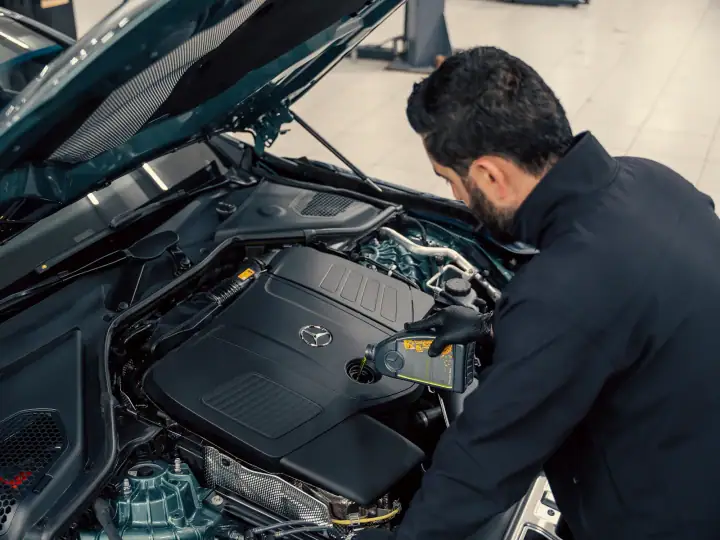
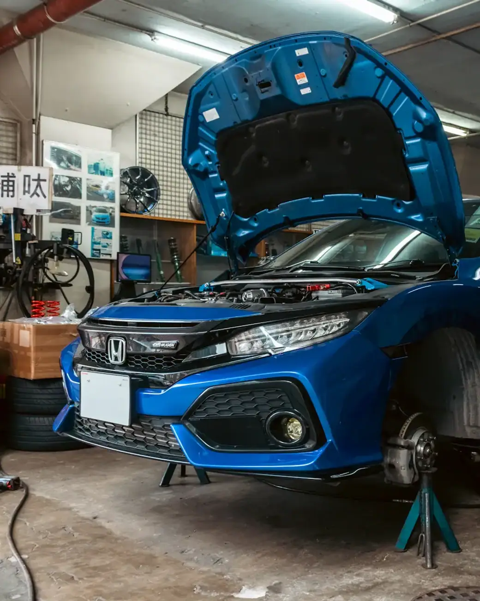
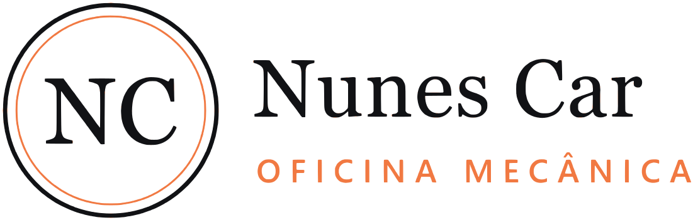
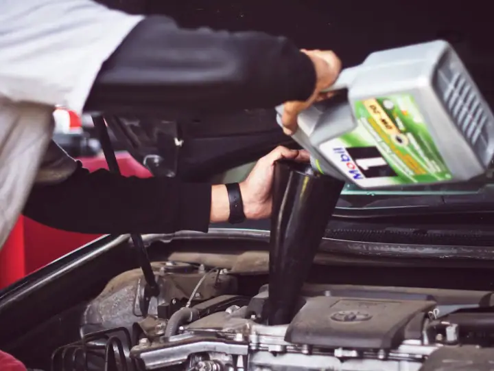
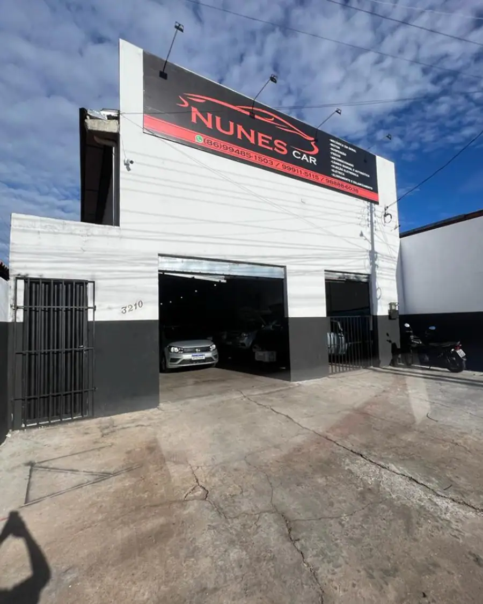

01Mecânica geral
Diagnóstico e reparo do que o carro está apresentando, com explicação clara do problema antes de mexer.
Pedir orçamentoProfissionais bem treinados, serviço de qualidade e cuidado que dá para ver: as peças são lavadas antes da montagem. Atendimento justo e honesto em Teresina.


Nunes CarConta comercialOi! Meu carro está fazendo um barulho na roda da frente09:12
Oi! Pode trazer pra gente dar uma olhada 👍 Qual o modelo e o ano do carro?09:13 ✓✓
É um Onix 2019. Amanhã cedo dá?09:14
Conversa ilustrativa
Serviços
Escolha o serviço e fale direto com a Nunes Car. A mensagem já vai pronta no WhatsApp, é só dizer o modelo do carro.

01Diagnóstico e reparo do que o carro está apresentando, com explicação clara do problema antes de mexer.
Pedir orçamento 02
02Junta de cabeçote, correia dentada, vazamentos e retífica, com a medição certa de cada peça.
Pedir orçamento 03
03Limpeza de bicos, falhas, consumo alto e luz da injeção acesa, com leitura por scanner.
Pedir orçamento 04
04Leitura completa das centrais do carro para achar a causa do problema antes de trocar peças.
Pedir orçamento
05Troca de óleo e filtros, conferência de fluidos, freios e suspensão para o carro rodar tranquilo.
Pedir orçamento 06
06Pastilhas, discos, fluido e revisão completa do sistema de freio. Barulho ou pedal baixo não se deixa para depois.
Pedir orçamento
A oficina
Um cliente gastou com várias oficinas antes de resolver o problema na Nunes Car. Outros elogiam o atendimento e as peças lavadas antes de montar.
Tire sua dúvida agora
As dúvidas que todo cliente tem, respondidas com as informações da Nunes Car. Se quiser algo mais, é só chamar no WhatsApp.
Onde fica a Nunes Car?agora
A Nunes Car fica na R. Des. Antônio Santana, 3210, Parque Poti, em Teresina (PI), CEP 64080-220. Pelo botão "Traçar rota" nesta página você abre o caminho direto no Google Maps.agora ✓✓
Como funciona
Diga o modelo do carro e o que ele está apresentando. A equipe responde e marca o melhor horário.
O carro é avaliado na oficina e você recebe o orçamento explicado, peça por peça, antes de aprovar.
O serviço é feito como combinado e você busca o carro com tudo explicado.
Segunda a sexta: 08h–18h · Sábado: 08h–12h
Avaliações no Google
Avaliações reais de clientes publicadas no Google Maps.
“Profissionais de excelência. Já havia ido em várias oficinas e gasto mais de 2 mil reais para tentar resolver um problema. Quando cheguei lá fui muito bem atendido, o André foi super transparente comigo e honesto. Recomendo muito o local.”
“Rapz, o lugar é perfeito, procure o André, o cara é bom (mecânico honesto) está de parabéns André 👏👏👏👏👏 você me terá como cliente até que a moste nos separe. Kkkkkkkkk abraço.”
“Profissionais gabaritado,excelente atendimento, lavam as peças antes da montagem e serviço de qualidade não tenho do que reclamar e preço ótimo Esse eu recomendo.”
“Uma oficina de excelente atendimento e pessoas dedicadas em solucionar o problema do carro do cliente.”
“Melhor oficina mecânica de Teresina, justo e honesto. Levo meu carro lá toda vez, recomendo demais.”
Dúvidas
Não achou a sua? Pergunte direto no WhatsApp.
A Nunes Car fica na R. Des. Antônio Santana, 3210, Parque Poti, em Teresina (PI), CEP 64080-220. Pelo botão "Traçar rota" nesta página você abre o caminho direto no Google Maps.
A Nunes Car atende segunda a sexta, das 08h às 18h; sábado, das 08h às 12h. Aos domingos fica fechada. O agendamento é feito pelo WhatsApp.
É só chamar no WhatsApp (86) 98888-6038 pelo botão "Pedir orçamento". Conte o modelo do carro e o que ele está apresentando. A equipe responde e combina o melhor horário para você trazer o carro.
Mecânica geral, Motor e cabeçote, Injeção eletrônica, Diagnóstico por scanner, Revisão e troca de óleo e freios. O serviço certo para o seu carro é definido depois da avaliação na oficina.
Diga a marca, o modelo e o ano pelo WhatsApp e a equipe confirma o atendimento antes de você levar o carro.
Se a luz piscar ou o carro falhar, pare e chame a oficina. Se ficar acesa sem sintomas, rode com cuidado até fazer o diagnóstico por scanner, que mostra a causa do alerta.
É a leitura dos módulos eletrônicos do carro com um equipamento ligado na tomada de diagnóstico. Ele mostra códigos de falha e dados do motor, o que ajuda a achar o defeito sem trocar peças à toa.
Depende do óleo e do uso. Em geral, entre 5 mil e 10 mil km, ou uma vez por ano, o que vier primeiro. O manual do carro traz o intervalo certo, e a oficina confere para você.
Onde fica
É só chamar
Peça seu orçamento na Nunes Car em poucos minutos pelo WhatsApp.